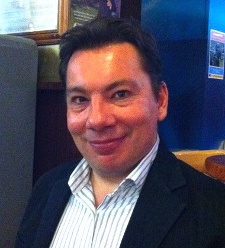
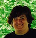
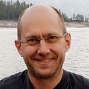
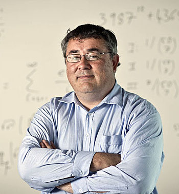

Feb 18-19, 2016 at the Melbourne Zoo

|
Keynote Dr Hadley Wickham Chief Scientist, RStudio Topic: TBD Dr Wickham's work is focused on making data analysis easier for the community. He has been instrumental in changing the way we think about data analysis, and providing new tools for tidying, rearranging, summarising and plotting data. His R packages, tidyr, dplyr, ggplot2, ggvis, are open source and widely used. |
Invited speakers
 |
 |
 |  | |
| Dr Phil Brierley, Pulse Data Science | Prof. Di Cook, EBS, Monash University | Dr Eugene Dubossarsky, Presciient | Prof. Heike Hofmann, Statistics, Iowa State University | |
|  |  | |||
| Prof. Rob Hyndman, EBS, Monash University | Prof. Thomas Lumley, Statistics, University of Auckland | Mr Carson Sievert, Statistics, Iowa State University | Dr Zoe van Havre, CSIRO |
Program (tentative)
| Thurs Feb 18 | |
| 9:00-10:30 | Keynote: Hadley Wickham |
| 10:30-10:45 | Morning tea |
| 10:45-12:15 | Invited talks (3) |
| 12:15-1:15 | Lunch |
| 1:15-2:45 | Invited talks (3) |
| 2:45-3:00 | Afternoon tea |
| 3:00-4:00 | Contributed talks (4) |
| 4:00-5:00 | Free zoo time |
| Fri Feb 19 | |
| 9:00-10:30 | Invited talks (3) |
| 10:30-10:45 | Morning tea |
| 10:45-12:15 | Contributed talks (6) |
| 12:15-1:15 | Lunch |
| 1:15-2:45 | Invited talks (3) |
| 2:45-3:00 | Afternoon tea |
| 3:00-5:00 | Free zoo time |
| 7:00- | Optional Twilight music |
Registration
includes zoo entrance, lunch, morning and afternoon tea both days- Industry $300 (limit 30)
- Academia $200 (limit 30)
- Students $50 (limit 20, needs to be accompanied by letter from major professor)
- Details to come